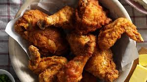

Fried Chicken recipe

Some delicous ass fried chicken
Fried chicken, also known as Southern fried chicken is a dish consisting of chicken pieces that have been coated with seasoned flour or batter and pan-fried, deep fried, pressure fried, or air fried. The breading adds a crisp coating or crust to the exterior of the chicken while retaining juices in the meat.
ingredients
- 4 cups all-purpose flour, divided
- 2 tablespoons garlic salt
- 1 tablespoon paprika
- 3 teaspoons pepper, divided
- 2-1/2 teaspoons poultry seasoning
- 2 large eggs
- 1-1/2 cups water
- 1 teaspoon salt
- 2 broiler/fryer chickens(3-1/2 to 4 pounds each) cut up
- oil for deep fat frying
steps
- In a large shallow dish, combine 2-2/3 cups flour, garlic salt, paprika, 2-1/2 teaspoons pepper and poultry seasoning. In another shallow dish, beat eggs and 1-1/2 cups water; add 1 teaspoon salt and the remaining 1-1/3 cup flour and 1/2 teaspoon pepper. Dip chicken in egg mixture, then place in flour mixture, a few pieces at a time. Turn to coat.
- n a deep-fat fryer, heat oil to 375°. Fry chicken, several pieces at a time, until skin is golden brown and a thermometer inserted into chicken reads 165°, about 7-8 minutes on each side. Drain on paper towels.